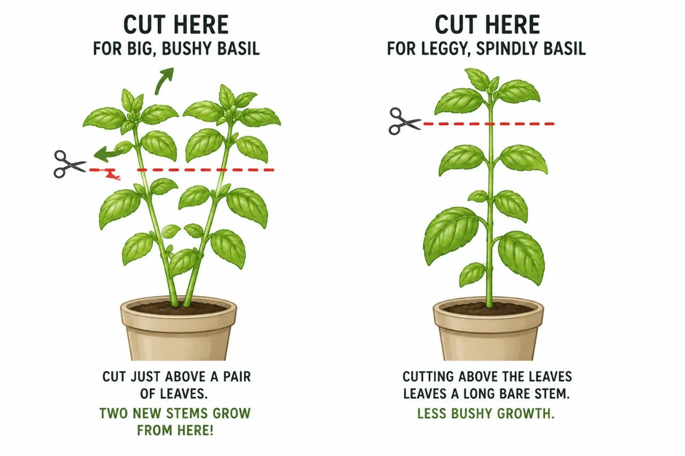

How to
grow basil.
Plant it. Clip it.
Use what grows.
A little warmth.
A little attention.
Seed or starter?
Seed gives you more plants for less money, with a slower beginning. A starter plant gives a beginner a head start. Either way, make room for the plant it will become.
Damp, not swamp.
Use well-draining soil or potting mix. Check the soil before watering; container basil can dry faster than a plant in the ground. Don’t leave the roots soggy.
A place in the sun.
Give basil full sun and warm weather. Cold nights and frost are a different proposition from a warm summer herb pot.


Harvest a stem.
Leave a future.
When you take a stem, cut just above a pair of leaves. Keep some growing plant behind instead of stripping it bare.
- Find the leaf pair below the growth you want to use.
- Make the cut just above that pair.
- Use the harvest, then watch the plant’s new growth.
Keep harvests light rather than taking more than about a third at once. Read the plant’s condition, not a fixed week on a calendar.
Start small.
Keep coming back.
- 01
Settle in.
Give the seedling or starter time to establish in its growing spot.
- 02
Clip lightly.
Take useful stems while leaving enough of the plant to keep growing.
- 03
Watch for flowers.
If leafy growth is the goal, pinch out flower spikes as they appear.
- 04
Use the extra.
Fresh leaves, pesto or a freezer plan can give a bigger harvest somewhere to go.
When a handful
becomes a bowlful.
The next question is what to do with it. Start with the meals you already make, then explore keeping the extra.
Find ways to use extra herbsTry a cutting, too
Start with a 4–6 inch stem: remove the lower leaves, place the stem in water, and watch for roots. A 7–14 day rooting expectation is a guide, not a guarantee. Conditions and the cutting itself matter.
A changing leaf
needs a closer look.
Yellowing?
Check soil moisture and drainage, but don’t assume that is the whole diagnosis. Disease can also change basil leaves.
Stretched or weak?
Look at light, growing conditions and how the plant has been pruned. Avoid promising a single fix from appearance alone.
Flower spikes?
Pinch them out if you want leafy growth. Keep harvesting thoughtfully rather than waiting for a jungle of flowers.
Cold is a real limit.
Frost or continuing cold can end an outdoor basil season. Growth and harvest timing vary; no calendar here promises “pesto by week ten.”

Herbs became part
of our place.
Herbs and perennials found a place near the cabin. Follow the actual garden journal—not a claim that we measured the value or yield of every herb in this guide.
Read our garden story